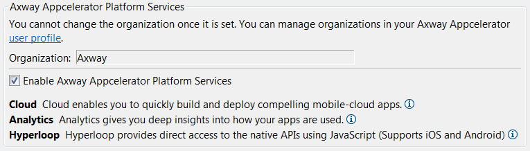
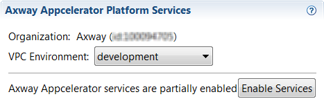

Titanium SDK and Mobile Backend Services
The Mobile Backend Services (MBS) APIs are supported in Titanium using the ti.cloud module, an optional module which is packaged with the Titanium SDK.
When new APIs are added to MBS, they may not be immediately available in the Cloud module. See the module API reference for a list of supported objects and methods.
Adding Mobile Backend Services to your Titanium project
This section describes how to add MBS to a Titanium application. If you don't have an existing MBS datasource, Studio can create one for you.
If you are using the CLI, the CLI automatically creates an MBS datasource for you.
Adding Mobile Backend Services to a new Titanium application
If you are using Studio to create a new Titanium application, you can create a new MBS datasource at the same time:
-
Click File > New > Mobile Project to start the new project wizard.
-
Choose a template and click Next.
-
On the next screen, make sure Enable AMPLIFY Appcelerator Services is checked.
-
Enter the project name and ID and click Finish.

This creates a new Titanium application and a new MBS datasource, and configures the Titanium project to access MBS.
Adding Mobile Backend Services to an existing Titanium application
If you have an existing Titanium project in Studio and want to create a new MBS datasource for it:
-
Open the project's tiapp.xml and switch to the Overview tab.
-
Click to Enable Services.

Adding an existing Mobile Backend Services application to a Titanium project
If you have already created an MBS datasource, you can add it to a Titanium project by editing the tiapp.xml file. You'll need the application key generated when you created the MBS datasource.
-
Open the project's tiapp.xml and switch to the tiapp.xml (source view) tab.
-
Add the following entries to the file:
<propertyname="acs-api-key-development"type="string">YOUR DEVELOPMENT APP KEY HERE</property><propertyname="acs-api-key-production"type="string">YOUR PRODUCTION APP KEY HERE</property> -
Find the <modules> element in the file, and add the following:
<moduleplatform="commonjs">ti.cloud</module>If there is no <modules> element, add the following inside the <ti:app> element:
<modules><moduleplatform="commonjs">ti.cloud</module></modules>(This element is usually placed just above the <deployment-targets> element.)
Virtual private cloud configuration
If you are using a virtual private cloud (VPC), you need to configure your Mobile Backend Services dispatcher URL in order to send push notifications with GCM. In the tiapp.xml file, add the acs-push-api-url application property and set the node text to the push dispatcher URL provided to you. The URL may be the same as your custom MBS endpoint and have deployment-specific settings, that is, two URLs--one for production and another for the development environment.
<ti:app> <property name="acs-push-api-url-production">YOUR PRODUCTION PUSH DISPATCHER URL HERE</property> <property name="acs-push-api-url-development">YOUR DEVELOPMENT PUSH DISPATCHER URL HERE</property></ti:app> |
Importing the module
Mobile Backend Services support is baked into Titanium. However, you must include the cloud services module into your project to use MBS functionality. In your app.js (or another suitable file), include the require() statement as shown here:
var Cloud = require('ti.cloud');Cloud.debug = true; // optional; if you add this line, set it to false for production |
Authenticating your application
To keep your MBS data secure from unauthorized access, your application must prove that it is allowed to communicate with MBS in each HTTP request. The Titanium Cloud module passes the MBS application key, configured in the project's tiapp.xml file, with each request over SSL.
For more information, see Authentication.
Push notifications
To setup your Titanium application to use push notifications, see the Push Notification guide.
Using the Mobile Backend Services APIs
The ti.cloud module APIs follow the same basic pattern. For each MBS method supported by the API, the module supplies a JavaScript method that takes two arguments: a parameters dictionary, which holds the parameters passed to the method, and a callback to be invoked when the method completes.
The response callback receives a single object, which is a slightly modified version of the REST response object. The REST response contains two objects:
-
meta : Object - Response metadata, such as success or failure, error messages, pagination information.
-
response : Object - Response data specific to the call. For example, if you search for places, the response object contains an array of places.
The module's response object includes any properties from response at the top level of the object. For example, if the REST response includes response.places, this is included as places.
The module's response object also includes the following fields:
-
meta : Object - Metadata from the REST response.
-
success : Boolean - True if the request succeeded (that is, meta.status == "ok").
-
error : Boolean - True if the request failed (meta.status != "ok").
-
message : String - Error message, if available.
-
code : Number - Error code, if available.
Examples
With over 25 APIs available for you to use, we obviously can't cover them all here. But let's take a look at a couple of examples.
Create a user:
// example assumes you have a set of text fields named username, password, etc.Cloud.Users.create({ username: username.value, password: password.value, password_confirmation: confirmPassword.value, first_name: firstName.value, last_name: lastName.value}, function (e) { if (e.success) { // user created successfully } else { // oops, something went wrong }}); |
Post a photo to a photo collection. To post a photo to a collection, you need to create the collection first using PhotoCollections.
// assumes you've obtained a photo from the camera or gallery, with blob data stored in an object named photo,// and that collectionID contains the ID of an existing photo collection.Cloud.Photos.create({ photo: photo, collection_id: collectionID, 'photo_sync_sizes[]': 'small_240'}, function (e) { if (e.success) { // null out our photo objects to clean up memory photo = null; collectionID = null; } else { // oops, something went wrong }}); |
Linking a Facebook login with your app. You must already be logged in using the Titanium Facebook module before calling the externalAccountLogin method.
// Not shown is the code to implement the Facebook module in your appvar Facebook = require('facebook');// call the ArrowDB Facebook SocialIntegrations API to link logged in statesfunction updateLoginStatus() { if (Facebook.loggedIn) { label.text = 'Logging in to ArrowDB as well, please wait...'; Cloud.SocialIntegrations.externalAccountLogin({ type: 'facebook', token: Facebook.accessToken }, function (e) { if (e.success) { var user = e.users[0]; alert('Logged in! You are now logged in as ' + user.id); } else { error(e); } }); } else { label.text = 'Please login to Facebook.'; }}// when the user logs into or out of Facebook, link their login state with ArrowDBFacebook.addEventListener('login', updateLoginStatus);Facebook.addEventListener('logout', updateLoginStatus);// add the Facebook login buttonwin.add(Facebook.createLoginButton({ top: 10})); |
For more examples, see the Mobile Backend Services API documentation.
Importing and running the Ti.Cloud sample application
The Titanium Cloud module also includes a sample application that demonstrates each of the MBS request types.
To import and run the Ti.Cloud sample application:
-
In Studio, select File > New > Mobile App Project.
-
Select the Classic application type with the Default Project template.

-
In the New Mobile App Project dialog, enter values for the Project Name and App ID fields, and check the option to Enable AMPLIFY Appcelerator Services.

-
Click Finish.
-
From your desktop, navigate to the following folder, where <latest_version> is the folder containing the latest SDK version:
-
Mac: ~Library/Application Support/Titanium/modules/commonjs/ti.cloud/<latest_version>/example
-
Windows 7: %ProgramData%\Titanium\modules\commonjs\ti.cloud\<latest_version>\example
-
Windows 8: %AppData%\Titanium\modules\commonjs\ti.cloud\<latest_version>\example
-
Linux: ~/titaniumsdk/modules/commonjs/ti.cloud/<latest_version>\example
-
-
Select all the folders and files in the example folder and drag them to your project's Resources folder.

-
If prompted, select the option to Copy Files and Folders and click OK.
-
Click Yes to All when asked if you want to overwrite files.
-
-
Open the project's tiapp.xml file and, in the Modules section, add the facebook and ti.cloudpush modules.

-
Save tiapp.xml and run the project on the desired device or emulator/simulator.
Once the application is running, try the following:
-
Create a new user by selecting Users > Create User. Enter a username, password and password confirmation, first name, and last name, then click Create. If the user is created successfully, the following dialog is shown:

-
View the newly created user in Dashboard:
-
Open Dashboard and select your application from the Apps menu.
-
Select Cloud > Manage Data, then click Users in the Manage Data Object table. You should see the user you created listed in the Users table.

-